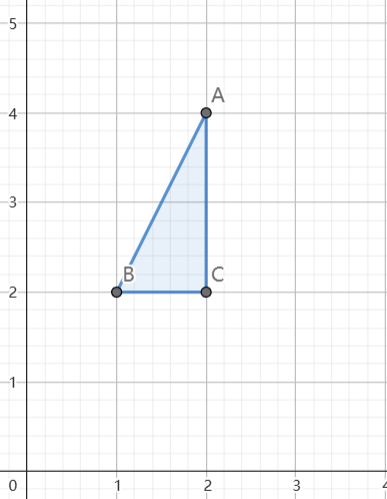

空间几何与解析几何
向量运算
- 点乘
- a⋅b=∣a∣∣b∣cos<a,b>
- 若表示为坐标形式可以有:a1⋅b1+a2⋅b2+a3⋅b3
- 如果两个 非零向量 点乘为0,说明这两个向量垂直
- 点乘求出的是一个数
- 叉乘(向量积)
- 有a×b=ia1b1ja2b2ka3b3
- 按第一行展开即可得出结果向量 (ni,nj,nk)
- 或者使用高中叉乘法直接求出 (ni,nj,nk) 数值
- 求投影
- 标量投影
- compba=∣b∣a⋅b
- 有时候也写成 prjba
- 向量投影
- projba=(∣b∣2a⋅b)b
- projba=(∣b∣a⋅b)∣b∣b
平面与直线方程
- 求平面方程(点法式)
- 平面方程一般形式
- 点法式 ： A(x−x0)+B(y−y0)+C(z−z0)
- (A,B,C)为平面法向量
- (x0,y0,z0)是平面上一个点
- 求过三点的平面P1,P2,P3
- 构造不共线的两个向量：P1P2=(x2−x1,y2−y1,z2−z1) P2P3=(x3−x2,y3−y2,z3−z2)
- 计算法向量 n=P1P2⋅P2P3
- 带入点法式
- 求过某一点且垂直于某直线的平面
- 垂直与直线 → 法向量与直线方向向量平行 → 法向量就是方向向量
- 带入点法式
- 求过一点且垂直于两平面的平面
- 垂直两平面，可以找到两平面的法向量n1,n2
- 所求平面法向量就是 n=n1×n2
- 带入点法式
- 求直线方程
- 直线方程一般形式
- 对称式 Ax−x0=By−y0=Cz−z0
- (A,B,C)为直线方向向量
- (x0,y0,z0)为直线所过的一个点
- 参数式：⎩⎨⎧x=At+x0y=Bt+y0z=Ct+z0
- 可以理解为Ax−x0=By−y0=Cz−z0=t 后拆开的三个式子,那互相转换也显而易见了
- 过点两点的直线
- A=(x1,y1,z1),B=(x2,y2,z2)
- 求两直线方向向量 n=AB
- 带入某一个点使用对称式
- 求已知两平面的交线
- 可以找到两平面的法向量n1,n2
- 直线方向向量 n=n1×n2
- 联立两个平面
- 令x=0(或y=0等手段)找出y，z
- 则这个直线过(0,y,z)
- 带入对称式
- 求曲线的切线与法平面 ^2c491e
- 已知曲面Ω(x,y,z)=x(t),y(t),z(t),求在(x0,y0,z0)处的切线方程(法平面)
- 令x(t)=x0求出t0
- 求x′(t0),y′(t0),z′(t0),即切线方向向量(法向量)
- 代回(x0,y0,z0)用对称式得出结果
- 或用点法式求出法平面
指向原始笔记的链接
多元函数微分
偏导数与全微分
- 基本求偏导数
- ∂x∂F(x,y)=dFx
- 即:将y看作常数对F中的x求导
- 同理,对y求偏导就是将x看为常数
- 复合函数求导
- 链式法则
- 可以画出z(u,v),u(x,y),v(x,y)中∂x∂z,∂y∂z的变量依赖关系的关系图
- 也可以直接写出∂x∂z=∂u∂z∂x∂u+∂v∂z∂x∂v 对∂y∂z也是一样的
- 隐函数求导
- 对隐函数F(x,y,z)有
- ∂x∂z=−FzFx
- ∂y∂z=−FzFy
- 也可以两边同时对x或y求偏导
- 全微分
方向导数与梯度
- 梯度
- 梯度向量是就是求所有变量对原函数的偏导然后放入到向量中
- 对∇f而言f(x,y,z), ∇f=(∂x∂f,∂y∂f,∂z∂f)
- ∇f(P0)=(∂x∂f(P0),∂y∂f(P0),∂z∂f(P0))
- 方向导数
- ∂l∂f=∇f(P0)⋅∣u∣u
- 方向导数最大(变化率最大)时候
- 方向为：∇f(P0)
- 最大值：∣∇f(P0)∣
- 方向导数最小(变化率最小)时候
- 方向为：−∇f(P0)
- 最小值：−∣∇f(P0)∣
- 变化为0时候
极值与最值
- 无条件极值f(x,y)
- 解方程组 {∂x∂f=0∂y∂f=0
- 一般而言上面方程组会解出一个(或多个)点A(x0,y0) 称为驻点
- 接下来需要我们求所有二阶偏导数
- fxx=∂x2∂2ffyy=∂y2∂2ffxy=∂x∂y∂2f
- 接下来计算黑塞矩阵的行列式D=(fxx(x,y)fxy(x,y)fxy(x,y)fyy(x,y))
- 将每个驻点带入D有D∣xy
- 如果D∣xy>0 且 fxx(x0,y0)>0 则函数有局部最小值
- 如果D∣xy>0 且 fxx(x0,y0)<0 则函数有局部最大值
- 如果D∣xy≤0 则没有局部最值
- 有条件的极值
- 已知f(x,y,z)在约束条件ω(x,y,z)=a的极值
- 构造拉格朗日方程 F(x,y,z,λ)=f(x,y,z)+λ( ω(x,y,z)−a )
- 求解方程组⎩⎨⎧∂x∂f=0∂y∂f=0∂z∂f=0∂λ∂f=0
- 解出方程组中 x,y,z 就可以得到极值点
指向原始笔记的链接
重积分
二重积分
- 直角坐标
- 其重点在于将积分区域表示出来
- 例：计算二重积分∬Dxydxdy，其中D由直线y=2,x=2,y=2x围成的有界闭区域。
- 对积分区域D有
- 此时我们可以将其看为x型(先y后x)的积分
- ∬Dxydxdy=∫12dx∫22xxydy
- 在积后一个积分的时候就将x看为常量对y积分即可
- 极坐标
- 利用极坐标变换：{x=ρcosθy=ρsinθ
- 当被积函数中含有 x2+y2 这类式子时候或者积分区域是圆类时候可以使用极坐标变换
- 极坐标变换注意dxdy要变为ρ dρdθ
- 设区域D:x2+y2≤1，则积分∬D(xy+3)2dσ=
- 利用极坐标变换有
- ∬D(ρ2cosθsinθ+3)2ρ dρdθ
- 在圆中 θ∈[0,2π]ρ∈[0,r] r是圆半径
- 有∫01dρ∫02π(ρ2cosθsinθ+3)2ρ dθ
- BYD好难算放弃了
- 二重积分中值定理
- 存在(x0,y0)∈D有∬Df(x,y)dxdy=f(x0,y0)⋅S
- 其中S为D的面积
- 对称性
- 二重积分区域D如果关于某一个变量轴对称，若其被积函数关于另一个变量为奇函数，则二重积分为0
- 例：积分关于x轴对称，且f(x,−y)=−f(x,y)则该积分为0
- 如果为偶函数，则只需要计算一半的区域然后乘2,即2∬D∗f(x,y)dxdy
三重积分
- 三重积分方法
- 直角坐标计算法：先一后二与先二后一
- 先一后二：即先计算一重积分，再计算二重积分
- 常见形式 ：z=x2+y2 与 z=a围的空间封闭区域
- 将∭Ωf(x,y,z) dxdydz 化为∬D dxdy∫x2+y2af(x,y,z) dz
- D为空间体在xOy平面上的投影
- 先二后一：即先计算二重积分，再计算一重积分
- 常见形式：当被积函数只有一个变量的时候，可以考虑后积这个变量。这样就可以化为：
- ∫z0z1f(z) dz∬D dxdy=∫z0z1f(z)⋅A dz
- 其中A一般是一个可以用z表示的沿着z变化的面积
- 如上例：若f(x,y,z)=z ，则我们可以化为：∫0az⋅(πz) dz
- 球面坐标法
- 球面坐标转换：
- ⎩⎨⎧x=ρsinϕcosθy=ρsinϕsinθz=ρcosϕ
- 微元变化：dV=ρ2sinϕ dϕdρdθ
- ρ的范围:从原点出发的射线穿过区域的起点和终点对应的ρ值
- 对于球体，通常是0到半径R;对于球壳，是内半径到外半径
- ϕ的范围:从正z轴开始，向下扫描区域所需的角度范围
- θ的范围:在xOy平面上投影区域所覆盖的水平角度范围
- 三重积分对称性
- 三重积分区域D如果关于某两个变量平面对称(如xOy)，若其被积函数关于另一个变量为奇函数(f(x,y,−z)=−f(x,y,z))，则三重积分为0
指向原始笔记的链接
曲线积分
- 第一类曲线积分(对弧长的积分)
- 一般形式∫Lf(x,y) ds
- 第一步：参数化曲线L
- 在直角坐标系下
- 对平面曲线f(x,y)通常可以表示为x(t),y(t)，t∈[t1,t2]
- 在极坐标系下
- 我们可以先使用极坐标转换将L转换为极坐标下的方程R(ρ,θ)，然后表示为ρ=ρ(θ)的形式
- 参数化主要是将x,y都用t来表示，比如y=x2+ex 就可以令x=t,则y(t)=t2+et , x(t)=t
- 微分元素ds
- 在直角坐标系下ds=(x′(t))2+(y′(t))2dt
- 在极坐标系下ds=ρ2(θ)+(ρ′(θ))2
- 被积函数变化
- 将f(x,y)→f(x(t) , y(t))
- 极坐标系 f(x,y)→f(ρ(θ)cosθ , ρ(θ)sinθ)
- 总公式
- 直角坐标系下∫Lf(x,y) ds=∫t1t2f(x(t) , y(t))(x′(t))2+(y′(t))2 dt
- 极坐标系下∫Lf(x,y) ds=∫θ1θ2f(ρ(θ)cosθ,ρ(θ)sinθ)ρ2(θ)+(ρ′(θ))2 dθ
- 第二类曲线积分(对坐标的积分)
- 一般形式 ∫LP(x,y) dx+Q(x,y) dy
- 参数化
- 对平面曲线f(x,y)通常可以表示为x(t),y(t)，t∈[t1,t2]
- 微元dx,dy
- 总公式
- ∫LP(x,y) dx+Q(x,y) dy=∫t1t2[P(x(t),y(t))x′(t)+Q(x(t),y(t))y′(t)] dt
- 格林公式
- 如果曲线正向(逆时针)则可以使用格林公式
- ∫LP(x,y)dx+Q(x,y)dy=∬D(∂x∂Q−∂y∂P)dxdy
- 如果不是闭合曲线，我们可以“造”一个曲线使其闭合
- 例：正向曲线L=sinx, x∈[0,π]
- 我们可以添加一条与L曲线方向相同的曲线y=0, x∈[0,π]
- 此时有∫L0P(x,y)dx+Q(x,y)dy=∫LP(x,y)dx+Q(x,y)dy+∫lP(x,0)dx
- 而第一个式子我们可以就用格林公式了
- 格林公式有”洞”的情况
- 我们对外部的线积分I0使用正常的格林公式积分
- 对内部的线积分I1我们必须保证其与外线方向相反的方向来保证使用格林公式的方向性
- 此时我们计算的积分I=I0+I1但由于I1是顺时针的，所以用格林公式时候会改变符号
- 即I=I1−I0
- 路径无关条件
- 若一个曲线积分∫LP(x,y)dx+Q(x,y)dy与路径无关则有
- ∂x∂Q=∂y∂P
指向原始笔记的链接
无穷级数
- 无穷级数判别
- 正项级数 ∑an,∑bn
- 比值判别法
- 设L=limx→∞anan+1
- 若0<L<1则级数收敛
- 若L>1则发散
- 若L=1则失效
- 比较判断法
- 设L=limx→∞bnan
- 如果L为有限正数则∑an与∑bn敛散性质相同
- 如果L→∞ 且∑bn发散则∑an发散
- 如果L=0且∑bn收敛，则∑an收敛
- 交错级数
- 一般形式∑(−1)nan
- 莱布尼茨判别法
- 满足上面两个则级数为收敛的
- 绝对收敛
- 幂级数收敛域
- 用比值判别法
- R=limn→∞an+1an
- R即为收敛半径(−R,R)
- 将两个端点代入看能否取值
- 根值判别法
- R=limn→∞n∣an∣
- r=R1即为收敛半径(−r,r)
- 将两个端点代入看能否取值
- 展开为幂级数
- 利用五个已知的常用展开式
- ex=n=0∑∞n!xn
- 1−x1=n=1∑∞xn,x∈(−1,1)
- 1+x1=n=1∑∞(−1)nxn,x∈(−1,1)
- ln(1+x)=n=1∑∞(−1)n−1nxn
- 傅立叶级数展开
- 有一个f(x)以2π为周期
- 和函数S(x0),其中有间断点xk
- 当x0=xk 时 S(x0)=f(x)
- 当x0=xk 时 S(x0)=2f(x0+)+f(x0−)
- 展开式a0=π1∫−ππf(x)dx
指向原始笔记的链接
微分方程
一阶微分方程
- 可分离变量的一阶微分方程
- 可以直接分离变量，将x,y移动到等式左右两侧对两侧积分就行
- 可降阶的微分方程
- 一阶齐次线性微分方程
- 一般形式y′=f(yx)
- 思路：换元u=yx
- 则有y=ux⟹y′=u+u′x
- 将y和y′带入原方程u+u′x=f(u)
- 一阶非齐次线性方程
- 一般形式：y′+P(x)y=Q(x)
- 求积分因子μ(x)=e∫P(x)dx
- 通项公式：y=μ(x)1(∫μ(x)Q(x)dx+C)
全微分方程
- 全微分方程一般形式
- P(x,y)dx+Q(x,y)dy=0
- 当∂x∂Q=∂x∂P时候满足一个存在一个U(x，y)为解
- 求解思路
- 先对P(x,y)关于x积分有：U(x,y)=∫P(x,y) dx+h(y)(1)
- 对U(x,y)求关于y的偏导∂y∂U=∂y∂(∫P(x,y)dx)+h′(y)
- 因为对U求对y偏导后必须等于Q(x,y),z则我们可以比较出h′(y)的表达式
- 对h’(y)积分得出h(y)
- 代回(1)式就可以得出方程
高阶微分方程
- 高阶齐次方程
- any(n)+an−1y(n−1)+⋯+a1y(1)+a0=0
- 求解思路
- 写出特征方程：anrn+an−1rn−1+⋯a0r0=0
- 求出所有r
- 根据r的结构写出通解
- r都不相同时候y=C1er1x+C2er2x+⋯Cnernx
- 存在k重根rp，对这个k重根有C1erpx+C2xerpx+⋯Ckxk−1erpx
- 存在复数根，对这个复数根a+bi 有eax(C1cos(bx)+C2sin(bx))
- 高阶常系数非齐次线性方程
- 一般形式(考纲)：any(n)+an−1y(n−1)+⋯+a1y(1)+a0=f(x)且f(x)=eλxPm(x)
- 解题思路
- 通解形式为y=yp+yh其中yp是其齐次方程的通解，yh为一个特解
- 我们主要考虑yh
- 我们推测yh(x)=eλxQm(x)
- 注意如果λ为特征方程的根，则需要修正yh(x)=xkeλxQm(x)
- 其中Qm(x)是形如Axn+Bxn−1+⋯+Nx0的多项式
- 对yh(x)求导一直求到n阶导
- 将yh(n)⋯y代入原式子与Pm(x)比较解出A⋯N的值
- 代入yh即可
指向原始笔记的链接